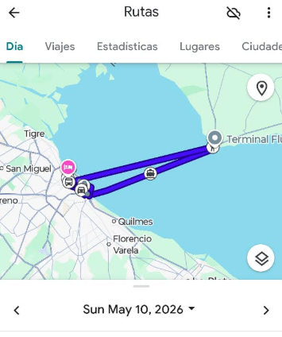

CRM + operación en campo
Tu operación.
Siempre en movimiento.
UrbanTrack conecta ventas y operaciones en campo. Registra clientes, visitas y entregas desde el celular, y consulta el avance de todo el equipo en un solo lugar.
Descarga la app
Disponible enGoogle Play
Disponible enApp Store
✓ Implementación simple
✓ Android, iOS y web
✓ Información en tiempo real
BUEN DÍA, MARTÍNPanel operativo
MR
Actividad del equipoEsta semana
Próximas visitasVer todas
Torre Central10:30 · En obra
Constructora Norte12:15 · Reunión
Comercial ABC15:40 · Entrega
Visita completadaConstructora Norte
Una sola fuente de verdad para
VentasOperacionesSupervisiónGerencia
01 — EL PROBLEMA
Tu equipo avanza.
Tu equipo avanza.
La información, no siempre.
Cuando cada dato vive en una planilla, un chat o la memoria de alguien, crecer también multiplica el desorden.
Seguimientos que se pierden
Clientes y oportunidades quedan sin respuesta porque el próximo paso nunca quedó registrado.
Operación invisible
Supervisores invierten horas llamando para reconstruir qué ocurrió durante el día.
Decisiones a ciegas
Gerencia recibe información tarde, incompleta y difícil de convertir en acciones concretas.

6 visitasRuta optimizada
02 — EL PRODUCTO
Del escritorio a la calle, todo queda conectado.
UrbanTrack une el CRM con la operación real de tu equipo. Cada visita, nota, entrega y seguimiento alimenta una historia completa.
Clientes y oportunidades
Centraliza contactos, conversaciones y próximos pasos.
Visitas y rutas
Planifica el recorrido y registra cada actividad desde el móvil.
Control en tiempo real
Ve el avance del equipo sin esperar reportes manuales.
03 — UN FLUJO COMPLETO
Una acción lleva a la siguiente.
Una acción lleva a la siguiente.
Nada se pierde en el camino.
Captura
Registra el lead, cliente u obra.
Visita
Planifica y documenta la actividad.
Avanza
Asigna tareas, entregas y seguimientos.
Decide
Mide resultados con datos confiables.
Todo el historial de cada cliente y obra en un mismo lugar.
Menos tiempo buscando datos y más tiempo moviendo oportunidades.
Visibilidad operativa sin perseguir a cada integrante del equipo.
Más operación.Ese es el cambio.
04 — PARA TODO EL EQUIPO
La misma información.
La misma información.
La vista correcta para cada rol.
UrbanTrack convierte el trabajo de cada persona en claridad para toda la organización.
Vendedores
Organizan su día, registran visitas y nunca pierden el próximo paso.
Ejecutar mejor →Supervisores
Siguen avances y detectan bloqueos sin depender de llamadas.
Coordinar mejor →Gerencia
Decide con indicadores claros y una visión completa de la operación.
Decidir mejor →
05 — EMPIEZA AHORA
Tu primera visita,
Tu primera visita,
registrada en minutos.
Descarga la app, crea tu cuenta y comienza a ordenar la operación de tu equipo sin procesos complicados.
-
01
Descarga la app
Instala UrbanTrack desde Google Play o App Store.
-
02
Crea tu cuenta
Registra tu empresa y prepara a tu equipo.
-
03
Registra tu primera visita
Agrega un cliente y deja definido el próximo paso.
¿LISTO PARA ORDENAR TU OPERACIÓN?
Que tu equipo se mueva.
Que tu equipo se mueva.
Sin perder el control.
Crea tu cuenta, descarga la app y conecta cada parte de tu operación desde el primer día.